Тревога, страх
и фобия
Что пугает в этих кадрах?
В шести окнах этой плёнки никого не убивают. Лестничный пролёт, провода с птицами, вода до горизонта, пустой коридор, гостиная, грозовое небо — и все шесть кадров страшные. Лекция разберёт, почему: у страшного есть грамматика, и она различима.
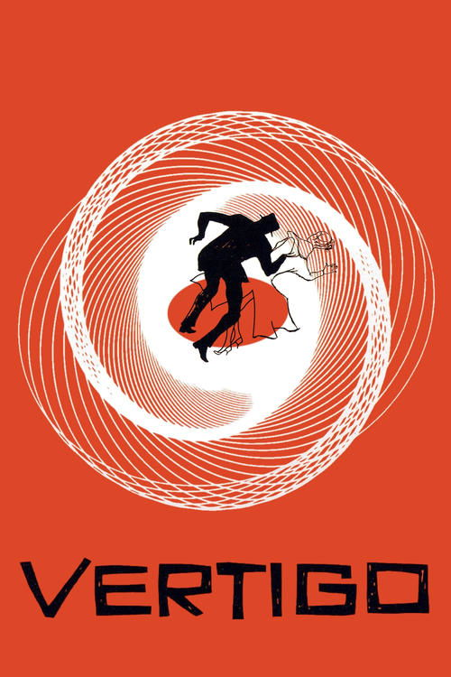
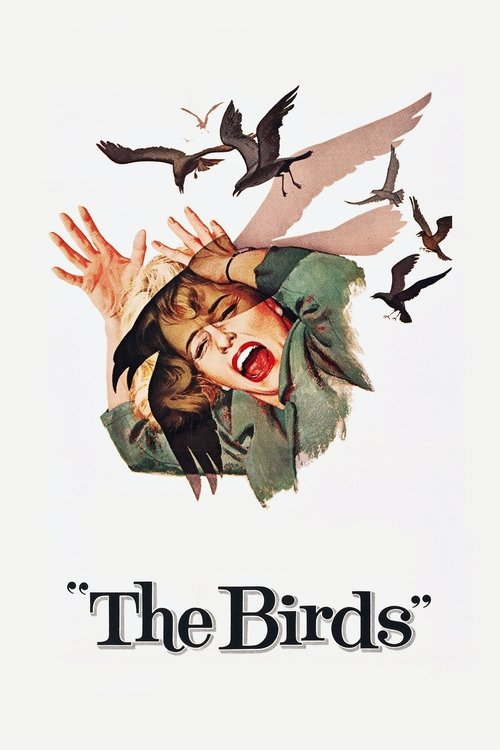
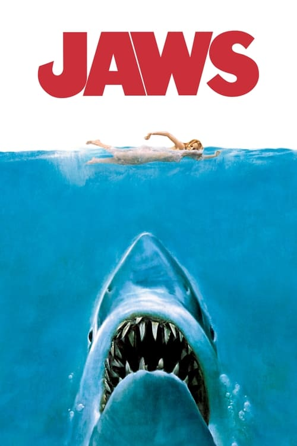
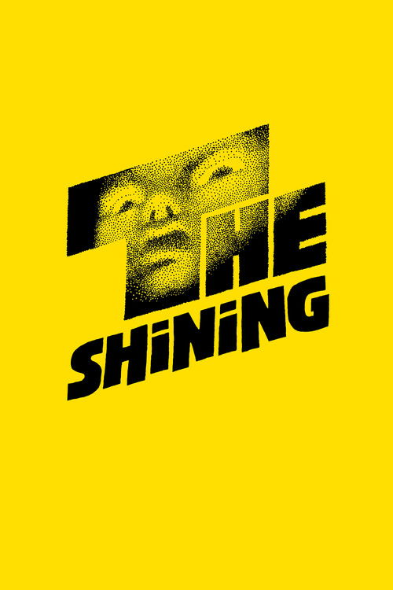
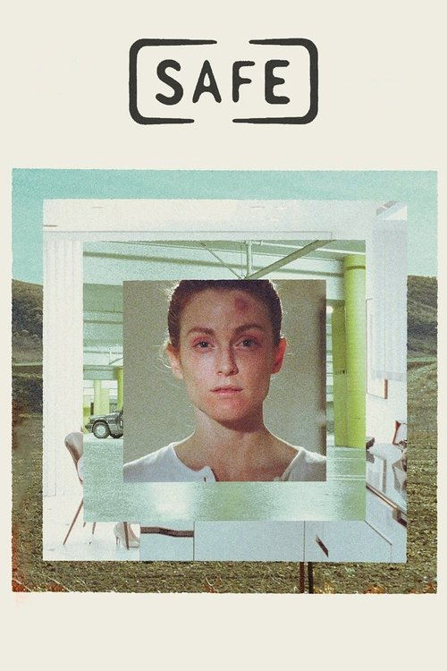
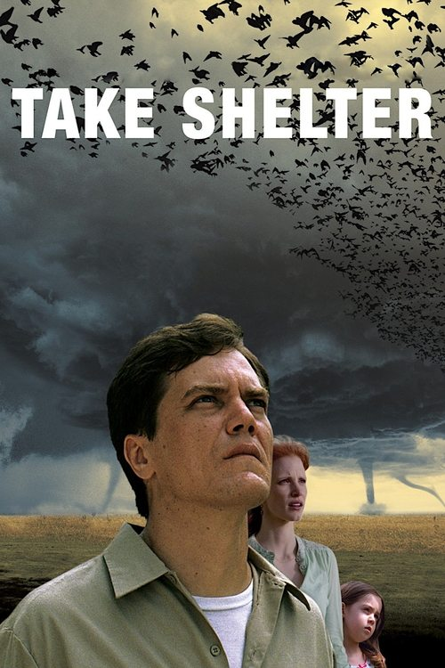
Главный вопрос
Чего боится зритель, когда бояться нечего? Почему пустой коридор держит крепче монстра, а самый страшный кадр — тот, где ничего не происходит?
Дорога лекции — лестница вглубь: от испуга, самого дешёвого аффекта экрана, через страх и фобию — к тревоге, у которой нет объекта. Чем ниже ступень, тем меньше в кадре видно и тем сильнее держит.
Кино знает четыре регистра страшного и для каждого держит отдельный инструмент.
Фобия — тревога, которой дали адрес. Неточный: лошадь вместо отца, высота вместо влечения.
Пустой коридор страшнее монстра: монстр отвечает страху, коридор — тревоге; объекта нет, и зритель приносит своего.
Метод: тест на объект
Есть ли объект?
Чего боятся в кадре: вещь, место, существо — или ничего. Первый вопрос сортирует регистры.
Кто дал ему имя?
Откуда у страшного адрес: клиника, культура, сюжет — или сам герой, спасаясь от безадресной тревоги.
Что останется, если объект изъять?
Решающий вопрос: страх исчезнет вместе с объектом; фобия и тревога — останутся.
Теория и экран пугают в ногу
Два узла в центре шкалы: Лакан читает семинар о тревоге — и в тот же год Хичкок выпускает фильм об атаке без причины, без объяснения и без музыки.
Испуг · страх · тревога
Без готовности
Опасность пришла, а ожидания не было: удар в тело раньше мысли. Из испуга, а не из страха, растёт травма.
С объектом
У страха есть адресат: акула, убийца, высота. Ему можно смотреть в лицо, от него можно бежать.
Без объекта
Состояние ожидания: опасность отовсюду и ниоткуда. Парадокс 1920 года: тревога защищает от испуга — тревожного не застать врасплох.
Четвёртый член лестницы — фобия — появится через три слайда: это тревога, которой дали адрес. Пока запомнить главное: три слова, которые язык склеивает в «страшно», — три разных устройства.
Кино родилось из испуга
Миф основания — зрители, бегущие от люмьеровского поезда. Ганнинг (1986) уточняет: раннее кино и было «кинематографом аттракционов» — оно не рассказывало, а кололо: экран наносил зрителю короткие удары зрелища.
Первый смонтированный укол датируется точно: «Люди-кошки» Турнёра (1942), продюсер Вэл Льютон — тишина, шаги, и в кадр с рёвом врывается… автобус. «Автобус Льютона» — дедушка всех джампскейров: механика испуга собрана из тишины, паузы и внезапной громкости.
Гарантированный аффект
Джампскейр — единственный аффект, который кино производит с гарантией: рефлекс не обмануть. Потому он и самый дешёвый: телу всё равно, испугал его шедевр или трейлер. Схема: тишина → врезка → громкость → разрядка смехом.
Бомба под столом
Взрыв без предупреждения
Двое говорят за столом — взрыв. Зритель вздрагивает. Пятнадцать секунд экранного эффекта, и сцена истрачена.
Зритель знает о бомбе
Под столом бомба, часы тикают, герои болтают о бейсболе. Пятнадцать минут публика работает: ей выдали тревогу, которой нет у героев.
Формула Хичкока из разговоров с Трюффо — киноязыковой перевод триады: испуг продаётся секундами, тревога — минутами. Саспенс — это Angst, поставленная на конвейер: зритель платит за управляемое ожидание.
Тревога — не поломка, а сигнал
Ранний Фрейд считал тревогу отходами производства: неразряженное либидо бродит и отравляет. Поздний — переворачивает схему: тревога осмысленна.
Запруженное либидо
Тревога — продукт застоя: энергия без выхода превращается в разлитое беспокойство. Тревога бессмысленна, её надо просто разрядить.
Система раннего оповещения
«Торможение, симптом и тревога»: тревогу подаёт «я» — как сигнал об опасности, прежде всего об угрозе утраты. Тревога — не шум, а речь: она предупреждает.
Ганс: тревога получает адрес
Пятилетний Ганс — знакомец по Лекции 10 — боится, что лошадь укусит, и отказывается выходить на улицу. Фрейд читает фобию как операцию спасения: невыносимая безадресная тревога связывается объектом-заместителем. Страх перед отцом, которому нельзя быть названным, переезжает на лошадь.
Выигрыш: у страшного появляется адрес — лошадей можно избегать, мир снова управляем. Цена: мир сжимается до маршрутов, где лошадей нет. Фобия — самолечение тревоги, которое работает, но дорого стоит.
Фобия = тревога + неточный адрес
Тест на объект, вопрос 02: кто дал страшному имя? У фобии имя всегда выдано задним числом — и всегда не тому. Высота Скотти и буря Кёртиса ответят по-своему.
Тревога не обманывает
Тревога без объекта
Классическая формула: страх имеет объект, тревога — нет. Она — ожидание опасности, у которой ещё нет лица.
Объект есть — но это не вещь
Тревога — единственный аффект, который не врёт. И объект у неё есть: объект-а, то, что не отражается и не называется. Тревога накатывает не когда чего-то не хватает, а когда нехватка исчезает — когда «оно» подошло слишком близко.
Отсюда тревога пустых пространств: коридор, в котором ничего нет, не оставляет места, куда спрятаться нехватке. Полный разворот этой оптики — взгляд как объект — в финальной лекции курса.
СтрахСтрах
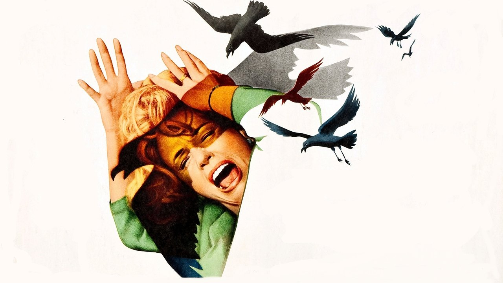
Птицы
Светская девушка привозит в приморский городок пару неразлучников — и птицы начинают нападать. Объект в кадре есть; объяснения не будет никогда.
Фильм, снятый без музыки
После триумфа «Психо» Хичкок берёт рассказ Дафны Дюморье и делает самый радикальный звуковой ход своей карьеры: в фильме нет партитуры. Вместо оркестра — электронный траутониум Оскара Салы и Реми Гассмана: крики, шорохи и хлопанье крыльев, синтезированные как музыка.
Звук без мелодии — тревога без мотива: не сообщает эмоцию, а отказывается её называть. Бернард Херрманн значится консультантом — композитор нанят, чтобы музыки не было.
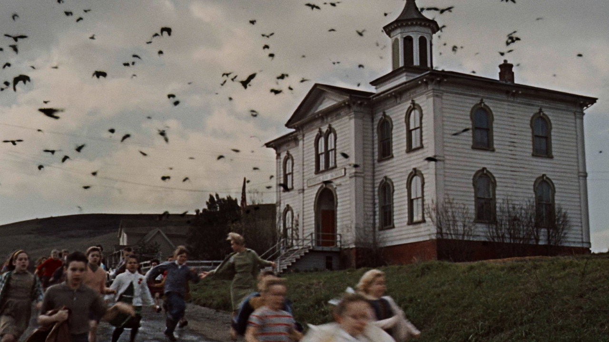
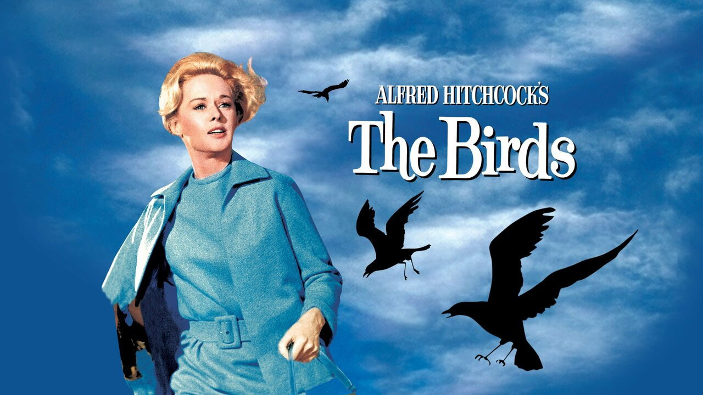
Вороны собираются за спиной
Мелани курит у школы; за её спиной на детской площадке садится ворона. Потом ещё одна. Камера возвращается к решётке всё реже — и в последний раз показывает её чёрной от птиц. Бомба под столом в чистом виде: зритель знает, героиня — нет.
Объект, не ставший знанием
Птицы в кадре — объект страха по всем правилам: их видно, от них бегут, от них заколачивают окна. Но фильм методично отрезает пути объяснения: ни вирус, ни месть природы, ни кара — версии проговариваются в кафе и осыпаются. Финал не даёт развязки: люди уезжают, птицы остаются, титра «Конец» нет.
Страх без «почему»
Объяснение приручает объект: названный страх можно сдать в архив. Хичкок оставляет объект неприрученным — и страх регрессирует к тревоге.
Страх, сползающий в тревогу
Furcht минус знание
Пока птицы атакуют — это страх: объект в кадре. Но между атаками объекта нет, а угроза осталась: фильм живёт в зазорах ожидания, и зазоры страшнее клювов. Страх, лишённый объяснения, не может закрыться — и стекает вниз по лестнице, в Angst.
Слишком близко
Птицы не «означают» ничего — в этом и ужас: обыденный фон (птицы на проводах) перестал держать дистанцию. Знакомое подошло вплотную — нехватка исчезла; тревога, по семинару X, не обманывает.
Тест на объект: 01 объект есть — птицы · 02 имени ему не дал никто: версии осыпались · 03 изъять птиц — останется главное: мир, переставший быть надёжным.
Как читали «Птиц»
Недоумение: технический аттракцион без объяснения и финала — Хичкок разучился рассказывать или замыслил что-то другое?
Феминистская ревизия: атаки стягиваются вокруг желания Мелани — фильм наказывает женскую инициативу и знает об этом.
Птицы — вторжение Реального: материнское сверх-Я, обретшее плоть; искать «смысл» птиц — значит промахнуться мимо их бессмысленности.
Природа, вышедшая из роли фона: фильм задним числом читается как первый блокбастер экологической тревоги.
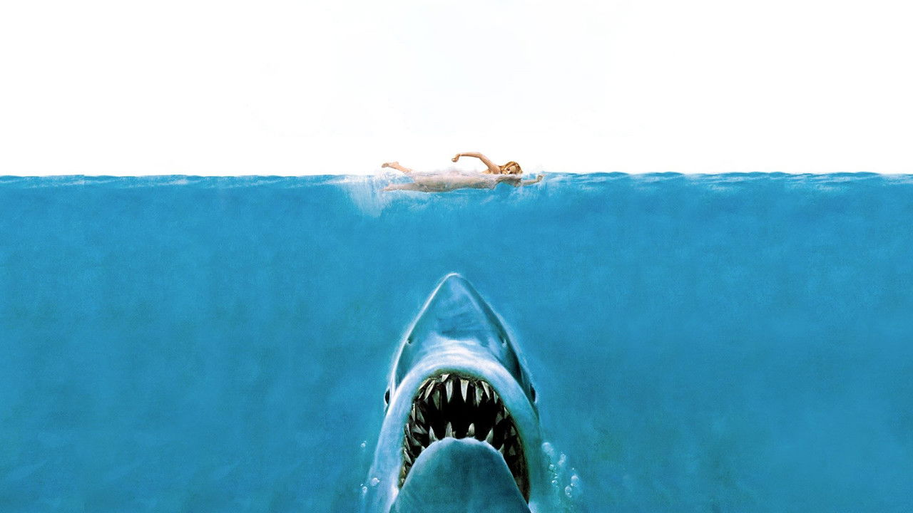
Челюсти
Курортный остров, начало сезона, в воде — акула. Две трети фильма объект страха не показан, и именно поэтому фильм работает.
Акула не работала
Механическая акула по прозвищу Брюс ломалась в солёной воде почти ежедневно. Съёмки летели, бюджет рос — и Спилберг перестроил фильм вокруг отсутствия: акулу заменили бочки, музыка и точка зрения из-под воды.
Производственная катастрофа обернулась учебником киноязыка: «фильм стал хичкоковским поневоле». Итог — первый летний блокбастер в истории проката и рождение индустрии, торгующей управляемым страхом.
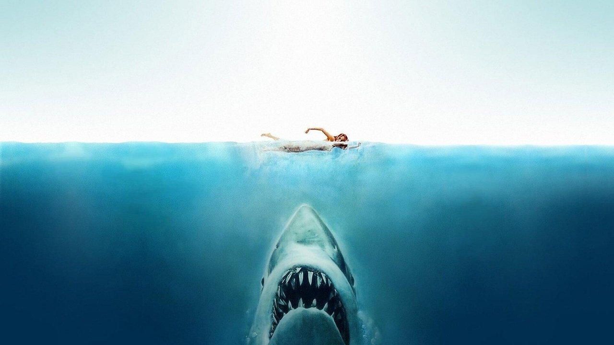
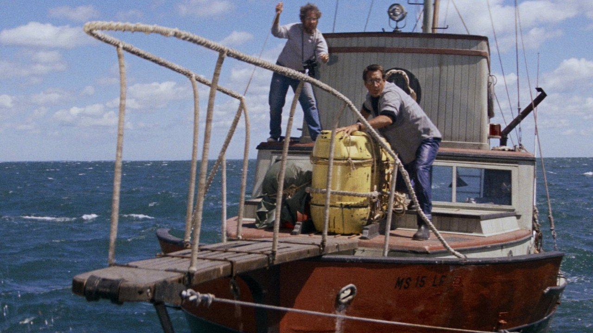
Присутствие без образа
Ночное купание Крисси: камера у самой поверхности, потом — взгляд снизу, из глубины, и две ноты Уильямса. Акулы в кадре нет ни секунды; есть ритм, точка зрения и вода. Страх собран целиком из тревоги — объект дорисовывает зритель.
Объект по частям
Спилберг выдаёт объект в рассрочку: две ноты — плавник — бочки — челюсть — и только в финале акула целиком. Каждая ступень показа снижает тревогу и повышает азарт: ужас превращается в охоту. На пляже — дважды процитированный у Хичкока dolly zoom: лицо Броуди рвётся из пространства, когда страх находит подтверждение.
Показанный объект выцветает
Чем дольше акула на экране, тем она резиновее. Страх живёт в отсрочке показа; полный показ — конец ужаса и начало боевика.
Тревога как сырьё страха
Angst → Furcht → охота
Фильм — производственная линия: разлитая тревога воды (объекта не видно) конвертируется в страх (плавник), страх — в приключение (охота). Лестница лекции, пройденная вверх: чем видимее объект, тем меньше держит.
Купальный сезон 1975 года
Фильм оставил след в теле аудитории: летом 1975-го Америка массово боялась заходить в воду. Экранная тревога связала себе объект в реальности — океан получил адрес. Фобический механизм, запущенный кинозалом.
Тест на объект: 01 объект есть, но выдан в рассрочку · 02 имя дали афиша и две ноты — раньше, чем показали тело · 03 изъять акулу — останется вода: тревога, из которой страх был собран.
Как читали «Челюсти»
Аттракцион года и смерть «нового Голливуда»: студии впервые увидели, что страх масштабируется как продукт.
Готтлиб и Спилберг: сломанная акула как соавтор — история о том, что ограничение сильнее замысла.
Идеологическое чтение: акула — пустое означающее, в которое эпоха сгружает свои страхи; охота троих мужчин — ремонт общественного договора.
Оскал вытесненного под глянцем курорта: пляж как витрина порядка, из-под которой возвращается то, что порядок исключил.
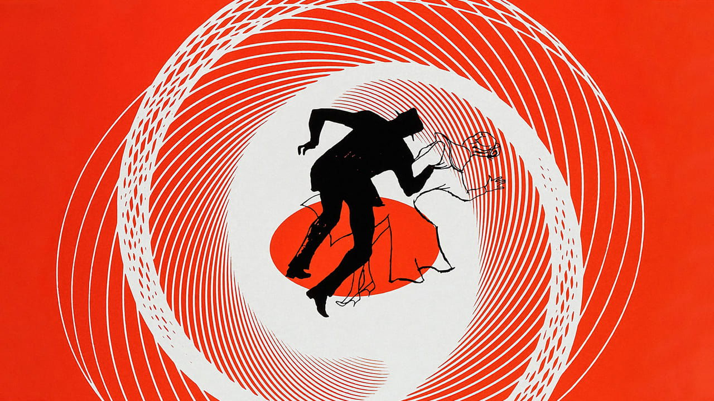
Головокружение
Детектив с боязнью высоты нанят следить за женщиной, одержимой мёртвой. Фобия здесь не помеха сюжету — она и есть сюжет.
Холодный приём, первый номер
В 1958-м картину встретили прохладно: медленно, странно, без саспенса привычного образца. Полвека спустя опрос Sight & Sound (2012) поставил «Головокружение» первым фильмом всех времён — выше «Гражданина Кейна».
Пролог задаёт фобии точное происхождение: погоня по крышам, сорвавшийся напарник, Скотти повисает над пропастью. Тревога получает адрес — высоту — в первые три минуты фильма.
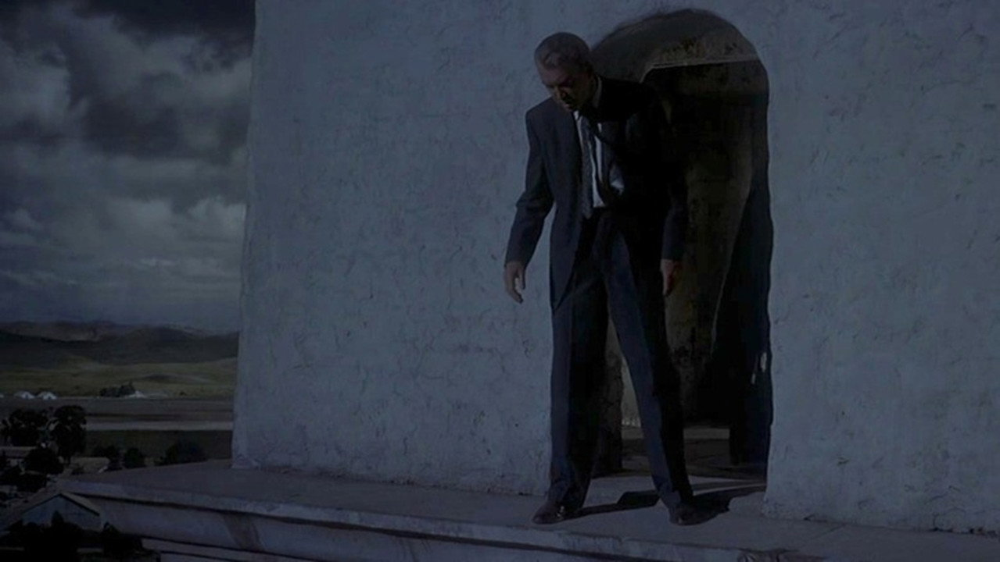
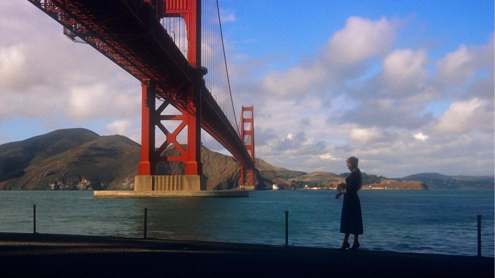
Пространство делает вдох
Скотти смотрит в лестничный пролёт — и пролёт растягивается, не сдвигаясь с места: объектив наезжает, камера отъезжает. Dolly zoom, изобретённый этим фильмом, — фобия, ставшая приёмом киноязыка: пространство искажается так, как искажает его тревога.
Орнамент одной фигуры
Фобия отпечатана в самой ткани фильма: спираль в титрах Басса, завиток причёски Мадлен, винтовая лестница, кружение камеры вокруг поцелуя. Головокружение — не только симптом героя, но и способ, которым фильм смотрит: влечение и падение свёрнуты в одну фигуру.
Vertigo ≠ страх высоты
Головокружение — это когда бездна тянет. Фобия Скотти защищает не от высоты, а от собственного влечения к падению — потому «лечение» повторением и кончается катастрофой.
Фобия хранит то, от чего защищает
Неточный адрес
Как лошадь Ганса хранила отца, высота Скотти хранит влечение: к падению, к мёртвой, к повторению. Избегая колоколен, он оберегает своё желание нетронутым — фобия консервирует то, что прячет.
Головокружение = близость
Тревога приходит, когда «оно» слишком близко: пролёт лестницы — не пустота, а зияние, которое притягивает. Финал на колокольне — экспозиционная терапия, сорвавшаяся в буквальное повторение травмы: адрес фобии оказался точнее, чем думал сюжет.
Тест на объект: 01 объект есть — высота · 02 имя дал пролог: сорвавшийся напарник · 03 изъять высоту — останется влечение, которому фобия служила упаковкой.
Как читали «Головокружение»
Моральное чтение: история о некрофилии взгляда — Скотти любит не женщину, а образ, и фильм это знает раньше героя.
Хрестоматия мужского взгляда: камера соучаствует в пересборке Джуди под фантазм — садизм оптики, выданный за романтику.
Лакановское чтение: Мадлен — возвышенный объект; катастрофа наступает, когда фантазм сбывается буквально.
Канонизация: фильм № 1 всех времён — критика выбрала главным фильмом историю болезни собственного взгляда.
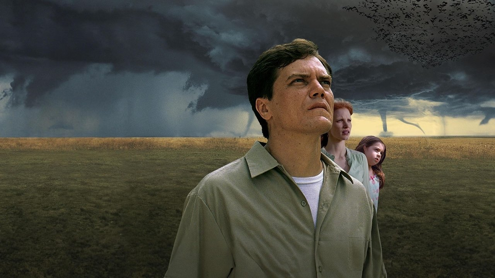
Укрытие
Рабочему из Огайо снятся бури, которых никто не видит. Он начинает строить укрытие — и фильм до последнего кадра отказывается сказать, болен он или прав.
Буря на фоне рецессии
Николс пишет сценарий на фоне кризиса 2008 года: у Кёртиса дом в кредит, страховка на грани, дочери нужна операция. Экономическая тревога эпохи ищет форму — и находит её в грозовом небе.
Ключевая деталь: матери героя в его возрасте поставили параноидную шизофрению. Кёртис знает семейный анамнез, читает брошюры, ходит к врачу — его тревога тревожится о самой себе.
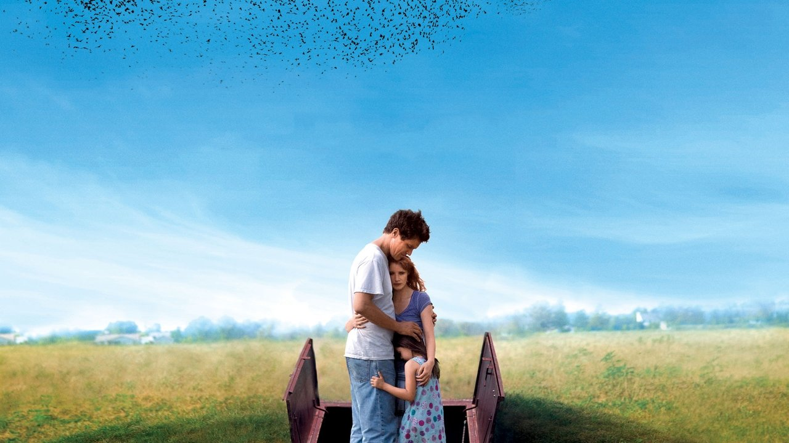
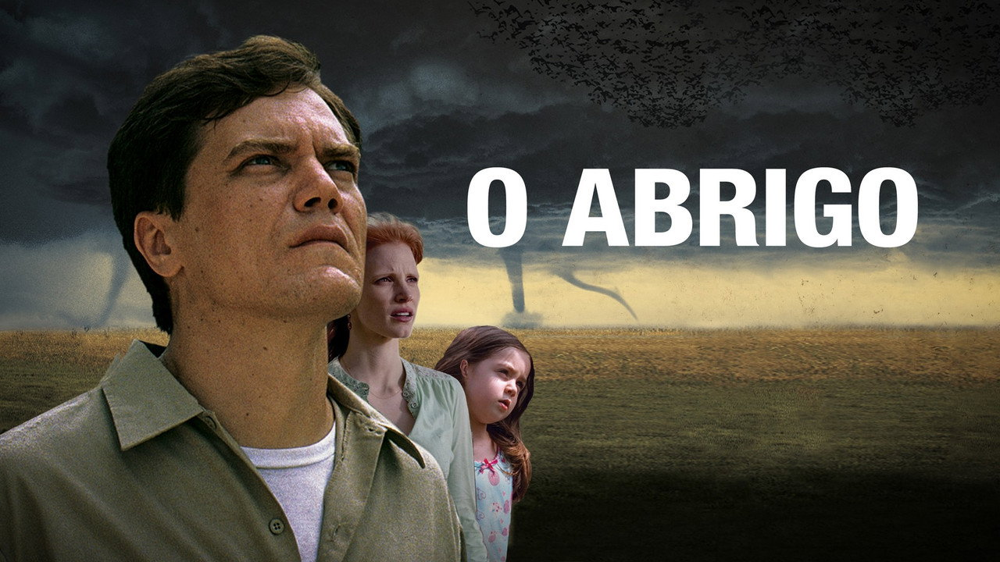
Дождь цвета машинного масла
Во сне Кёртиса идёт густой жёлтый дождь, псы срываются с цепей, знакомые смотрят стеклянными глазами. Наяву он строит: копает, бетонирует, проводит вентиляцию. Стройка — фобический ритуал: тревога связывается трудом, у неё появляется смета.
Фобия без гарантии
Буря вместо наследственности
Безадресная тревога — «со мной происходит то же, что с матерью» — получает адрес в небе: бурю можно ждать, к буре можно готовиться. Бункер — материализованная фобия: адрес, отлитый в бетоне.
Сигнал, который не врёт
Фильм держит неразрешимость до финала на пляже: болезнь или пророчество — оба чтения работают без остатка. «Тревога не обманывает» — единственная фраза теории, которую сценарий инсценирует буквально: сигнал истинный, даже если адрес ложный.
Тест на объект: 01 объект есть — буря · 02 имя дал сам герой, спасаясь от семейного анамнеза · 03 изъять бурю — останется наследственность, кредит и страх передать дочери то, что досталось от матери. Кросс: Шребер и бред-стройка — Лекция 09.
Тревога ищет объект:
«аллергия на XX век»
За шестнадцать лет до Николса Тодд Хейнс снимает зеркальный случай: домохозяйка Кэрол Уайт начинает задыхаться — от лака, выхлопа, нового дивана. Врачи не находят ничего; Кэрол находит имя сама: «химическая чувствительность». Тревога без адреса выбирает адресом весь современный мир.
Финал — секта Wrenwood, торгующая объяснением: болезнь от недостатка любви к себе. Индустрия имён для тревоги показана без карикатуры — и оттого страшнее.
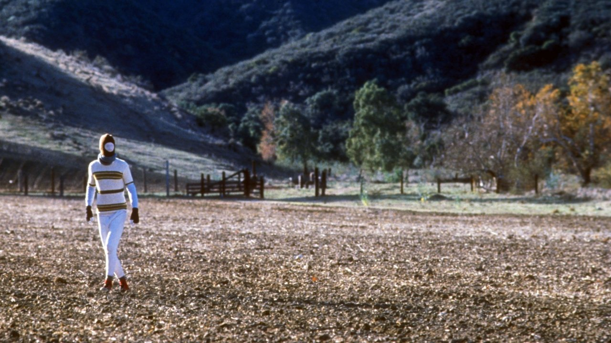
Николс нагнетает, Хейнс кадрирует
Тревога крупным планом
Грозовое небо, гул, сны — камера живёт внутри состояния Кёртиса и заражает им зал. Зритель тревожится вместе с героем.
Тревога общим планом
Хейнс держит Кэрол в далёких, симметричных, слишком просторных кадрах: белые интерьеры смотрят на неё, как террариум. Зритель тревожится за героиню — и о самом пространстве. Мост к акту IV: тревога переезжает в архитектуру.
Финальный кадр «Спасения» — Кэрол перед зеркалом в фарфоровом иглу произносит «я люблю тебя» собственному отражению: фобия дошла до предела — безопасным осталось одно место размером с гроб. Кросс: зеркало и идентификация — Лекция 04.
Как читали «Укрытие» и «Спасение»
Растерянность: сатира на нью-эйдж, хоррор без монстра или клинический этюд? Фильм отказался выбирать — критика тоже.
Опрос Village Voice: «Спасение» — лучший фильм десятилетия; болезнь без диагноза прочитана как портрет девяностых.
Шеннон как лицо новой американской тревоги: рецессия, страховки, семья — критики читают фильм социально раньше, чем клинически.
Медицинское поле спорит о «химической чувствительности» до сих пор — фильмы честнее: они не диагностируют, а показывают работу тревоги.
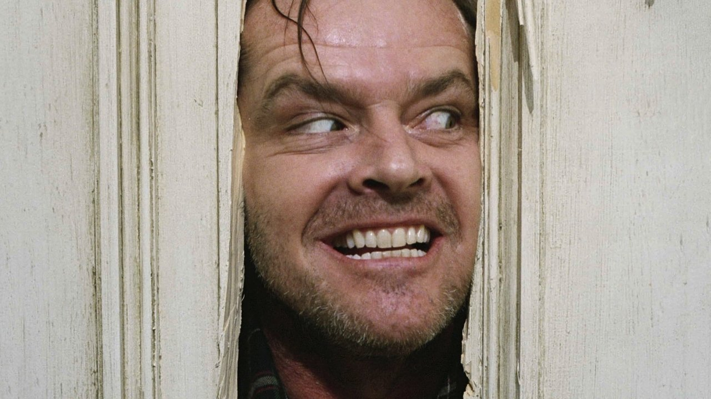
Сияние
Семья остаётся на зиму смотрителями пустой горной гостиницы. Самый страшный фильм о том, как ничего не происходит в очень больших помещениях.
Взгляд, скользящий без тела
Кубрик выпотрошил роман Кинга: убрал объяснения, мотивировки, победу семьи. Осталась гостиница. Новорождённый стедикам Гаррета Брауна дал фильму его главное существо — камеру, которая скользит по коридорам на высоте детского затылка, ни от чьего лица.
Титры-даты — «Месяц спустя», «Среда», «4 часа дня» — работают машиной отсрочки: время идёт, ничего не происходит, и это «ничего» сгущается с каждой табличкой.
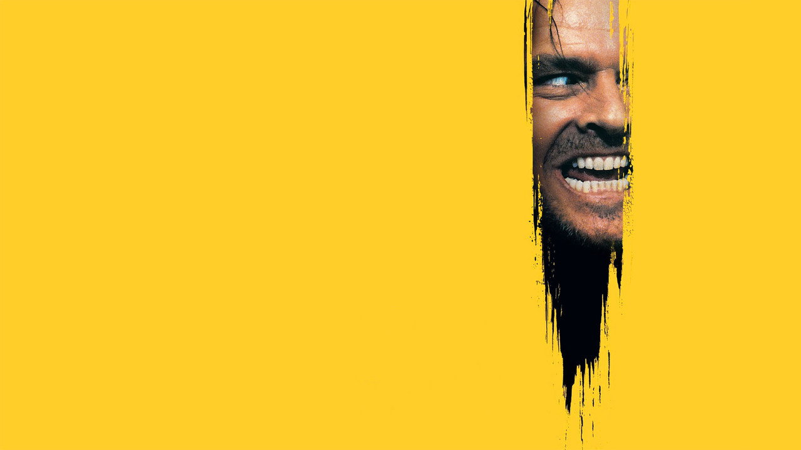
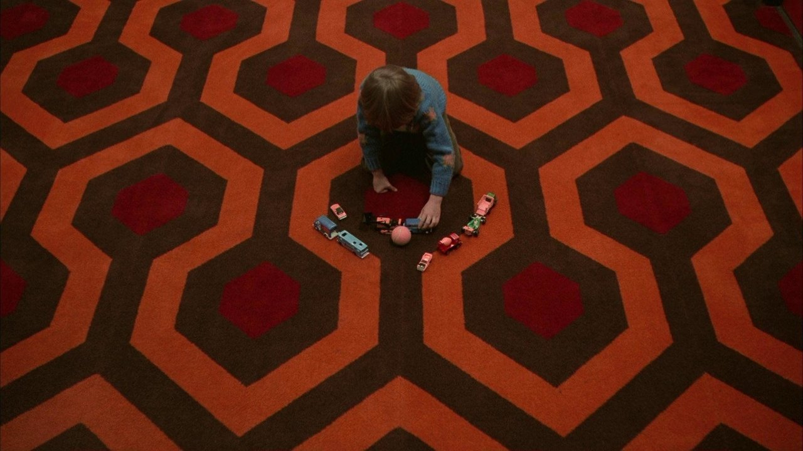
Ковёр — паркет — ковёр
Дэнни едет на трицикле по коридорам: грохот колёс по паркету, глухота ковра, снова грохот. Ритм звука размечает пустоту, камера в затылок не даёт увидеть, что за углом. Ничего не случается — и каждый поворот страшнее предыдущего. За одним из них — близнецы.
Невозможная топология
Центральная симметрия, коридоры в одну точку, ковровый узор-лабиринт — и незаметная ложь плана: окно кабинета Ульмана не может выходить на улицу, комнаты Оверлука не сходятся в одну схему. Зритель не считывает ошибку сознательно — но тело замечает: пространство неисправно. Тревога встроена в архитектуру кадра, а не в события.
Angst как метод
Объекта нет: есть длительность, симметрия и гул. Призраки — самое слабое в фильме место; пустой коридор — самое сильное.
Отель как психика
Чистая Angst
Тест на объект даёт нижнюю ступень: изъять призраков — страшно останется. Значит, держит не объект. Оверлук страшен как состояние: слишком просторно, слишком симметрично, слишком тихо — ожидание без адресата.
Некуда спрятать нехватку
В переполненном кадре тревоге есть где спрятаться; в пустом — негде. Коридор в одну точку — это взгляд без смотрящего: пространство, которое ждёт. Один шаг до финальной лекции: у Кубрика смотрит отель, у Лакана — объект.
Тест на объект: 01 объекта нет — есть место · 02 имя пытаются дать все: алкоголизм, призраки, история отеля — и ни одно не покрывает · 03 изъять всё названное — останется коридор. Ответ лекции живёт здесь.
Как читали «Сияние»
Разгром: «не страшно» — Кубрику отказано в жанре; медленность и пустота прочитаны как высокомерие.
Академическое чтение: Оверлук как лабиринт — фильм о пространстве, в котором сюжет лишь гость.
Документ о сверхтолкованиях: геноцид, Аполлон, минотавр. Фильм-тревога порождает бесконечные теории — каждый зритель становится маленьким Гансом, дающим гулу адрес.
Eerie: жуть присутствия там, где должно быть пусто, и пустоты там, где должно быть присутствие, — Оверлук как образцовое зловещее место.
Тревога без фильма
Май 2019-го, анонимный тред: фотография пустого жёлтого офисного коридора и подпись — «если неосторожно выпасть из реальности, окажешься в бэкрумс: гул люминесцентных ламп, влажный ковролин, шестьсот миллионов квадратных миль пустых комнат».
Ни автора, ни монстра, ни сюжета. Один интерьер и одно правило — отсюда не выйти. Интернет-фольклор собрал чистую Angst без повествования: наследство Оверлука, разобранное до голой архитектуры.
Знакомое место,
из которого вышли люди
Лиминальная эстетика — пустые торговые центры, ночные школьные коридоры, бассейны без купающихся — стала жанром картинки: сотни тысяч подписчиков разглядывают интерьеры, где не происходит ничего.
Формула Фишера работает точно: зловещее — присутствие там, где должно быть пусто, и пустота там, где должно быть присутствие. Эти места сделаны для толпы — толпы нет; функция осталась, люди исчезли. Кадр, в котором «кто-то должен был быть».
Зритель приносит объект с собой
Бэкрумс — предельный эксперимент лекции, поставленный самой культурой: из страшного убрали фильм. Остались коридор, гул и зритель — и страшно по-прежнему. Значит, последний источник тревоги сидит в зале: пустой кадр работает как экран проекции, и каждый заполняет его своим. Кино всегда это знало — интернет лишь довёл до чистоты опыта.
Собственного ожидания
Тревога не обманывает: она сообщает не об опасности в кадре, а о том, что зрителю есть что терять. Пустой коридор просто не мешает это услышать.
Лестница объекта
Что метод даёт и где буксует
Словарь вместо «страшно»
Четыре регистра дают точный язык: понятно, чем джампскейр отличается от саспенса, почему показанный монстр выцветает и на чём держится пустой коридор. Тест на объект работает на любом фильме.
Кэрролл и запрет на диагноз
Когнитивная критика (Кэрролл, 1990): «парадокс хоррора» решается без бессознательного — любопытством и композицией. Ответ психоанализа: любопытство не объясняет, почему пугает пустота. И главный запрет курса в силе: анализировать фильм — не значит диагностировать зрителя.
Рынок пересел с испуга на тревогу
Лестница лекции читается в сегодняшней афише как прейскурант.
Джампскейр девальвирован трейлерами и стал жестом дурного тона; «элевейтед-хоррор» продаёт длительность и гул — тревогу вместо укола. Хоррор-игры довели дело до предела: игрок сам несёт камеру по пустому коридору, и саспенс стал управляемым от первого лица.
Джампскейр-инфляция: рефлекс не девальвируется, но перестаёт быть событием.
А24-волна: «Наследственное», «Маяк» — тревога длительности как фирменный стиль.
Лиминальный контент: тревога окончательно отделилась от повествования.
Карта курса
К семинару
Сцена × тест на объект
Одна страшная сцена из фильмов лекции: есть ли объект, кто дал ему имя, что останется, если объект изъять. Определить ступень лестницы; 300–400 слов, без пересказа фабулы.
Один из двух вопросов
«Бомба под столом в кино 2020-х: где сегодня живёт саспенс?» либо «Почему бэкрумс не нужен монстр?» 800–1000 слов.
Просмотр
«Доктор Мабузе, игрок» и «Синий бархат» — с вопросом на полях: кто в этих фильмах смотрит и откуда.